Territórios da Água
[texto]
Introdução
[texto]
Sobre o Projeto
[texto]
Contextualização do Projeto
[texto]
Programa de Conservação e Recuperação das APPs
O tratamento das APPs requer uma mudança de abordagem, a partir de uma perspectiva multidisciplinar e em múltiplas escalas, que extrapole recortes normativos e articule as dimensões socioambiental e de gestão, de maneira a avançar institucionalmente na formulação de políticas públicas integradas. Nesse sentido, o objetivo principal do Territórios da Água é a implantação da Ação 1 do PLANPAVEL, que é a elaboração do Programa de Conservação e Recuperação de APPs no Município de São Paulo.
A construção do programa considera a diversidade territorial e a complexidade do tratamento dos corpos d’água e suas margens no estabelecimento das prioridades e objetivos, buscando resultados concretos e consolidando uma agenda política cujas diretrizes partem de um entendimento sistêmico das áreas de preservação. O programa tem como objetivo preservar e recuperar as fontes de água, como forma de enfrentamento da crise hídrica, visando contribuir para garantir a segurança hídrica, bem como para o aumento da cobertura vegetal. Para isso, é fundamental desenvolver propostas baseadas em critérios técnicos e científicos e em aprendizados das políticas anteriormente implementadas, que possam dar suporte à mudança na compreensão das funções ecológicas e sociais e aos procedimentos de intervenção em APPs.
Está em desenvolvimento o desenho do Programa, com base em parâmetros de intervenção, gestão e modelagens de financiamento. Também serão formuladas estratégias para sua avaliação e monitoramento.
Avaliação das Intervenções em APPs
A Avaliação das Intervenções em Áreas de Preservação Permanente (APPs) integra o Projeto Territórios e foi desenvolvida para reunir e sistematizar informações sobre as intervenções realizadas em APPs urbanas associadas aos cursos d’água do município de São Paulo, entre 2002 e 2024. Este trabalho contribui para a construção do Programa de Conservação e Recuperação de APPs do Município de São Paulo.
A proposta surgiu da necessidade de compreender como as APPs urbanas vêm sendo tratadas pelo poder público ao longo do tempo. Assim, considerando os distintos contextos desses territórios e que, possivelmente, parte dessas informações poderiam estar dispersas, a reunião do material em uma única base de dados foi um passo decisivo para entender as intervenções, como elas foram conduzidas e o que as experiências observadas ensinariam para o futuro.
Para a construção do levantamento dos dados, foi realizada a revisão bibliográfica sistemática da produção acadêmica sobre as intervenções em APPs urbanas no município de São Paulo, incluindo artigos, dissertações e teses. Em paralelo, foi desenvolvido o levantamento documental de registros institucionais produzidos por diferentes secretarias municipais da Prefeitura de São Paulo (PMSP) com atuação sobre esses territórios, tendo como fonte de dados o portal de notícias da PMSP. Com esse conjunto de informações, totalizando 120 artigos selecionados e 434 notícias do portal da Prefeitura, foi possível sistematizar as intervenções em uma base de dados estruturada, reunindo dados sobre localização, características das ações, órgãos envolvidos e outros elementos registrados nas fontes analisadas.
O levantamento permitiu a construção de uma base de dados de intervenções realizadas em APPs urbanas no município. Foram identificadas 274 intervenções associadas a 209 corpos d’água, sendo possível observar a distribuição territorial, os tipos de intervenções realizadas e os órgãos públicos envolvidos em sua implementação. Essa base passou a compor uma das referências do Projeto Territórios da Água e apoia diretamente suas atividades de pesquisa e desenvolvimento.
Além da sistematização dos dados, o trabalho resultou em produtos técnicos e científicos que registram e divulgam os resultados obtidos. Entre eles destacam-se o artigo científico1 apresentado no Encontro Nacional da Associação Nacional de Pós-Graduação e Pesquisa em Planejamento Urbano e Regional (ENANPUR), em 2025, a Nota Técnica sobre as Intervenções em Áreas de Preservação Permanente no Município de São Paulo (2002 -2024) e os subsídios utilizados para o desenvolvimento do projeto e construção do programa de Conservação e Recuperação de APPs.
A avaliação, produzida por meio da reunião de dados, ofereceu um panorama das intervenções em APPs no município de São Paulo e ampliou a disponibilidade de informações sobre a atuação pública. Ela descreve ações isoladas, ajuda a revelar padrões, lacunas e possíveis caminhos para a gestão desses territórios, reforçando sua importância para o planejamento urbano e ambiental da cidade.
1 https://editorarealize.com.br/artigo/visualizar/122574
Resultados Avaliação das Intervenções em APPs [infográficos]
As obras de macrodrenagem dominaram o período de análise, respondendo por 45,6% do total. Em seguida, vieram as intervenções intersetoriais2 (33,9%), das quais 56% corresponderam a urbanização de favelas, e as obras de implantação de parques em APPs (16,8%). A Secretaria de Infraestrutura Urbana (SIURB) foi a principal proponente, com 65 intervenções, seguida pela Subprefeituras (SMSUB, 38), SVMA (33) e SEHAB (30). A distribuição territorial concentrou-se nas zonas Leste e Sul, as duas com maior número de intervenções (106 e 104, respectivamente) e também as com maior interface com assentamentos precários e áreas de risco.
A análise temporal aponta mudanças significativas no perfil das intervenções. Nos anos 2000, os resultados do Programa 100 Parques marcaram o período com um pico de obras de criação de parques em APPs. Entre 2007 e 2012, os recursos do PAC impulsionaram um aumento expressivo das intervenções intersetoriais. A partir de 2017, houve queda nesse tipo de obra e crescimento das intervenções setoriais de macrodrenagem, sendo essa uma tendência que se acentuou nos últimos anos, com predomínio de obras emergenciais, especialmente a partir de 2022. De modo geral, embora se observe uma transformação no tratamento das APPs no município em relação ao período histórico, ainda persiste a realização de obras públicas setoriais, isto é, sem soluções ambientais, sociais e urbanísticas integradas.
2 As obras identificadas como “intersetoriais” dizem respeito às intervenções que abrangem mais de um tipo de obra, como, por exemplo: obra de macrodrenagem associada à parque linear etc.
{kind=link}
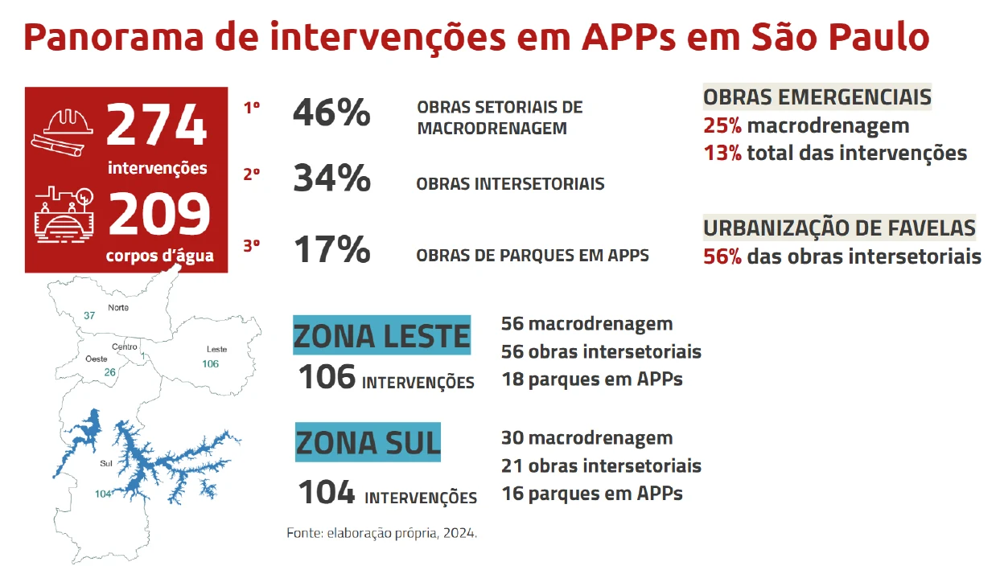
{kind=link}
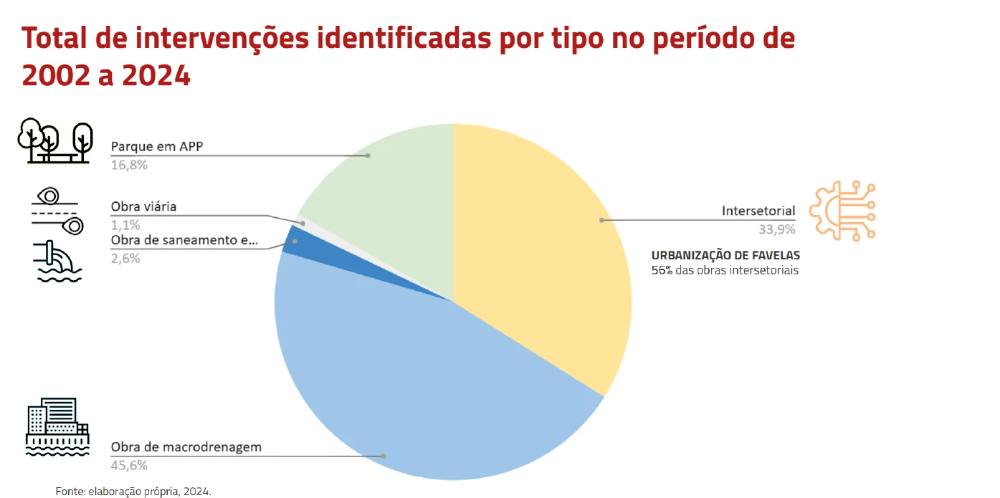
{kind=link}
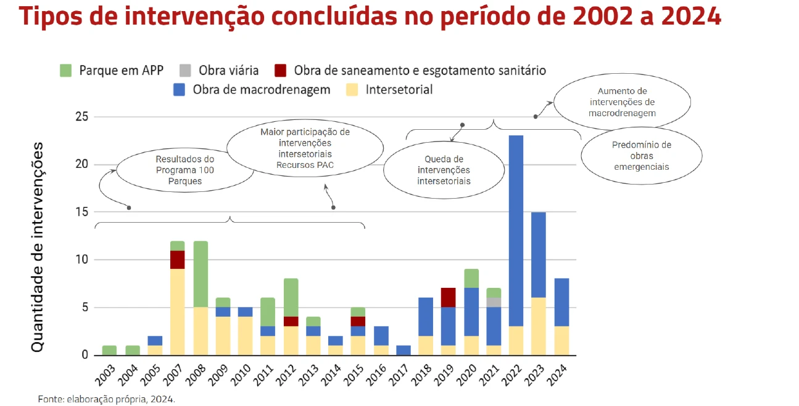
{kind=link}
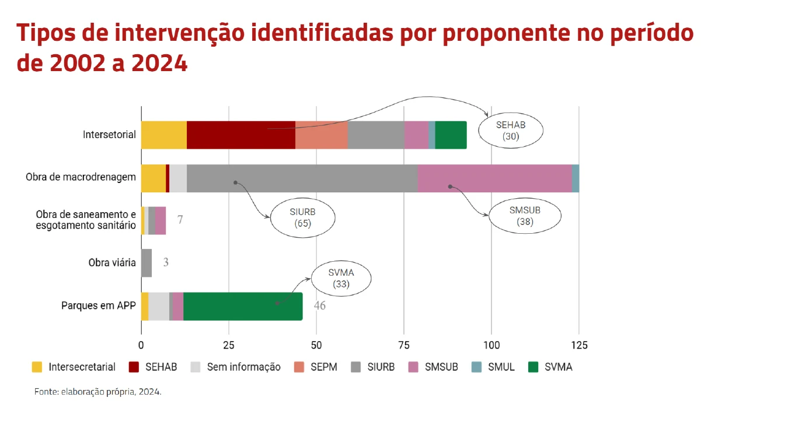
Tipologias de APPs
A tipologia é um instrumento importante para subsidiar a formulação e a implementação de uma política pública que responda ao desafio de planejamento e gestão das áreas lindeiras aos rios, no município de São Paulo, dada a heterogeneidade do território e o agravamento dos impactos climáticos. A sua estruturação tem como papel colaborar com a orientação da priorização de ações e recursos futuros, de forma justa e eficiente, e definir critérios claros para possíveis intervenções, evitando obras isoladas de macrodrenagem e promovendo projetos que considerem simultaneamente a justiça climática, a redução de riscos e a melhoria da qualidade de vida.
São Paulo, por ser uma cidade com diferentes graus de uso, apresenta-se atualmente um território multifacetado necessitando uma leitura que considere suas particularidades. Desta forma, para a estruturação da tipologia sobre as áreas lindeiras aos rios foi escolhida uma abordagem científica capaz de expressar sua diversidade, considerando os múltiplos usos e funções ecológicas, paisagísticas, produtivas, urbanísticas, de lazer e de sociabilidade encontrados nas margens dos cursos d’água. Essa tipologia partiu da adaptação da abordagem sugerida por Ferreira (2022), articulando os conceitos de território usado e situação geográfica (GEORGE, 1965, 1969, 1980; SANTOS, 1999; SILVEIRA, 1999; RIBEIRO, 2015; CATAIA e RIBEIRO, 2015).
Como o conceito de situação geográfica promove articulação entre análises estruturais e análises conjunturais, permite fazer uma análise crítica da forma em que se encontram as margens dos rios do município na atualidade, questionando como a interferência política sobre a gestão dos rios contribuiu – ou não – para a sua preservação em determinado período. Além disso, permite avaliar se a forma de aplicação de uma determinada norma em cada território é a mais apropriada, iluminando diferentes conflitos existentes, possibilitando a abertura de caminhos distintos para uma melhor forma de atuação nesses espaços.
Para aplicar esse conceito à compreensão dos rios na cidade de São Paulo, iniciou-se um trabalho de sobreposição de dados oficiais provenientes do IBGE e da Prefeitura Municipal de São Paulo, entendendo que tais dados fazem o papel do “sítio”, conforme anteriormente mencionado, mas também contemplando os dados correspondentes às “ações” já previstas pelo poder público para essas áreas. Para isso, foi necessário estabelecer variáveis prévias que pudessem fazer sentido a esta temática, assim como foi estruturado por Santos (2014). O autor menciona que a escolha das variáveis não pode ser, todavia, aleatória, mas deve levar em conta o fenômeno estudado e a sua significação em um dado momento, de modo que as instâncias econômica, institucional, cultural e espacial sejam adequadamente consideradas. E o autor também salienta que, ao longo da História, toda e qualquer variável se acha em evolução constante.
A definição das etapas de construção da base de dados considerou que o produto espacial obtido deveria ser capaz de reunir informações para uma compreensão aprofundada das APPs do município de São Paulo. A existência de uma grande diversidade de dados produzidos em diferentes escalas configurou-se como um desafio inicial, dada a necessidade de se trabalhar com diferentes formatos e escalas. A utilização da grade estatística desenvolvida pelo Instituto Brasileiro de Geografia e Estatística (IBGE) viabilizou a superação de tal desafio ao permitir a sobreposição de dados multiescalares, garantindo certo grau de homogeneização das informações do território – necessário para construção de uma tipologia das APPs.
O sistema de grade organiza e difunde informações estatísticas por meio da divisão do território nacional em células padronizadas em forma quadricular, o que possibilita análises comparativas e aprofundadas, desvinculadas das fronteiras político-administrativas (IBGE, 2016). Essas células possuem tamanho de 1 km por 1 km nas zonas rurais e de 200 metros por 200 metros nas áreas urbanas3. Historicamente adotado ao redor do mundo, este sistema confere uma base referencial para a geração de um suporte geográfico estável, originado a partir da demanda por integrar informações provenientes de diferentes fontes, agrupadas em unidades geográficas que não eram compatíveis entre si.
3 A grade estatística com os dados para o Censo Demográfico de 2022 foi disponibilizada após a construção da base de dados apresentada neste artigo. Salienta-se que todas as células de 1 km existentes em 2010 foram mantidas na versão de 2022, exceto aquelas que passaram a abranger setores censitários urbanos em 2022, que foram divididas em células de 200 metros.
Entende-se, portanto, que a metodologia desenvolvida está orientada por três principais critérios, sendo eles: i. sobreposição e compatibilização de dados; ii. multiescalaridade; e iii. homogeneização. O procedimento de construção da base de dados divide-se em quatro etapas: i. definição e ordenamento dos dados disponíveis para caracterização das APPs quanto à sua fitofisionomia, aos aspectos sociais e aos métodos e critérios de conservação e recuperação, com base na produção social do espaço e na regulação territorial; ii. compatibilização espacial dos dados com a grade estatística, a partir dos critérios de predominância, presença e proporção; iii. elaboração de mapas temáticos voltados à caracterização e regulação territorial das APPs; e iv. desenvolvimento de análises qualitativas e quantitativas a partir dos dados produzidos.
Inicialmente, os dados foram obtidos a partir do portal de dados públicos da Prefeitura Municipal de São Paulo (GeoSampa) e do Censo Demográfico (IBGE, 2022). Totalizaram 35 variáveis selecionadas para análise. Posteriormente, foram organizados em duas categorias: i. caracterização territorial, relacionada à situação atual das APPs e aos elementos presentes no território; e ii. regulação territorial, que reflete as orientações de planejamento e ordenamento propostas pela administração municipal, indicando as intenções futuras para o uso e ocupação do território.
Uma segunda categorização dos dados foi definida, com base em dois parâmetros: i. identidade; e ii. qualificação. O primeiro deles refere-se à uma característica que distingue aquela porção do território das demais, por exemplo, caso uma quadrícula seja definida como uso residencial, não pode ser uma área de uso comercial, ou um parque, simultaneamente. Quanto ao segundo parâmetro, as informações incorporadas não são excludentes, mas qualificam aquela porção do território, como é o caso da presença de cobertura vegetal, o grau de vulnerabilidade social e a existência de risco, por exemplo, que podem se sobrepor de modo a qualificar aquela área.
Os dados voltados à caracterização territorial totalizam 24 variáveis, quatro de identidade e 20 de qualificação. Tais variáveis possibilitam avaliar, no momento atual, o uso do solo e o padrão de ocupação das margens dos rios, levando em conta os fatores históricos que contribuíram para a configuração atual. Entre os aspectos considerados estão: os tipos de uso da terra, o nível de consolidação ou ocupação, a presença de vegetação nativa, parques, áreas verdes e outras unidades de conservação, além da precariedade urbana, da vulnerabilidade social, da presença de favelas e dos riscos hidrogeomorfológicos, entre outros.
Já os dados relacionados à regulação territorial totalizam 11 variáveis, duas de identidade e nove de qualificação. Elas possibilitam interpretar as orientações de planejamento e ordenamento estabelecidas pelo poder público municipal, com base nas principais normas locais – em especial o Plano Diretor Estratégico (Lei Municipal nº 16.050/2014), bem como a Lei de Parcelamento, Uso e Ocupação do Solo (Lei Municipal nº 16.402/2016).
Resultados
Como resultado do processo de construção da base de dados, obtivemos um arquivo georreferenciado contendo os dados compatibilizados com um total de 30.014 quadrantes da grade estatística, a partir do qual foi possível produzir análises quantitativas com viés qualitativo, observando o objetivo final da análise. A seguir, serão apresentados os principais dados e produtos cartográficos obtidos, considerando as potencialidades e limitações existentes pelo uso da grade estatística.
A partir de uma visão geral dos córregos existentes na zona urbana do município de São Paulo, foi conduzida uma comparação entre os valores em percentual obtidos a partir da grade estatística e aqueles em quilômetros lineares, com o objetivo de avaliar a proximidade dos dados incorporados à grade em relação à realidade do território de São Paulo. Na Tabela 1 a seguir, são apresentados os percentuais das margens de rios urbanas cujos cursos d’água estão canalizados subterrâneos, canalizados abertos, em estado natural e em lago ou reservatório.
Nota-se que há uma diferença de 8,8% entre os rios canalizados subterrâneos conforme a base de dados autoral (38,9%) em comparação com os quilômetros lineares (47,7%). Para os rios em estado natural, a diferença é de 9,5%, estimados em maior quantidade na grade (50,7%) do que em quilômetros lineares (41,2%). E, para os rios canalizados abertos (7,5%, na grade em comparação a 7,6%, em km) e para os rios em lago ou reservatório (2,9%, na grade em comparação a 3,5%, em km), a divergência nos valores são de 0,1% e 0,6%, respectivamente.
Tabela 1 – Percentual das margens de rios, em área urbana, conforme situação do curso d’água de São Paulo
| Situação do Curso D’água | % APP (Grade) | % APP (km) | Variação (%) |
|---|---|---|---|
| Canalizado Subterrâneo | 38,9% | 47,7% | -8,8% |
| Estado Natural | 50,7% | 41,2% | +9,5% |
| Canalizado Aberto | 7,5% | 7,6% | -0,1% |
| Lago ou Reservatório | 2,9% | 3,5% | -0,6% |
| Total | 100% | 100% | N/A |
AINDA FALTA TEXTO E PRINCIPALMENTE MAPAS
{kind=link}
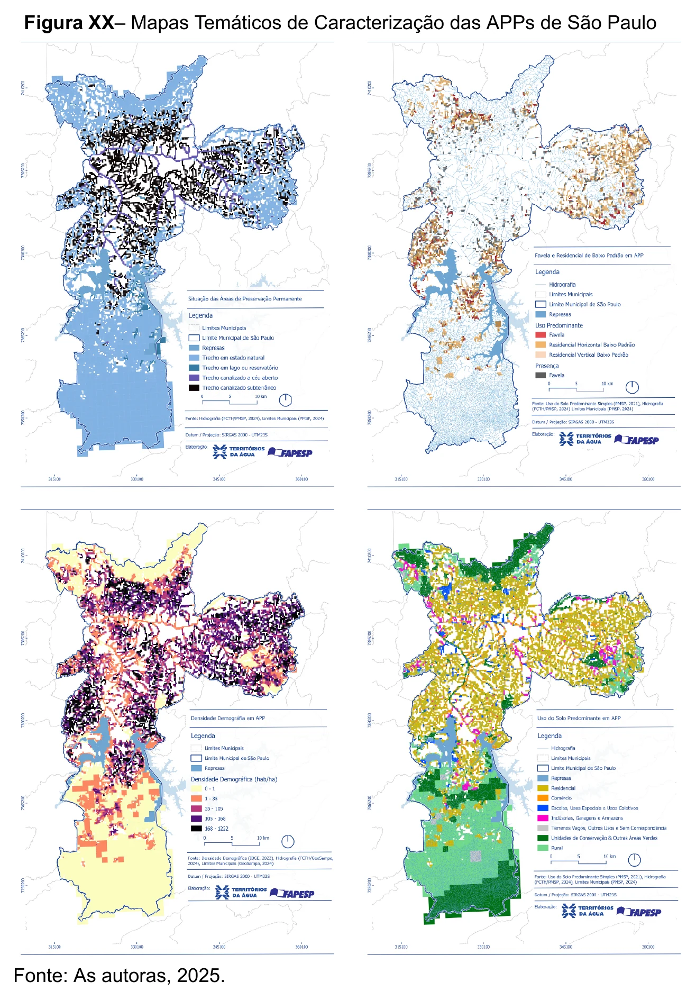
{kind=link}
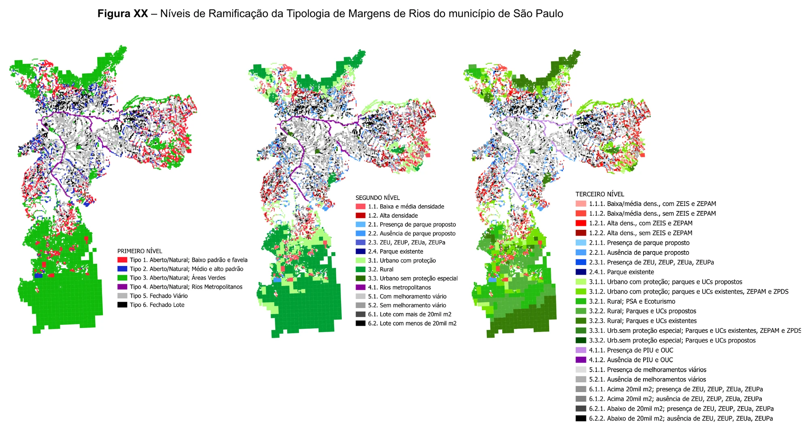
{kind=link}
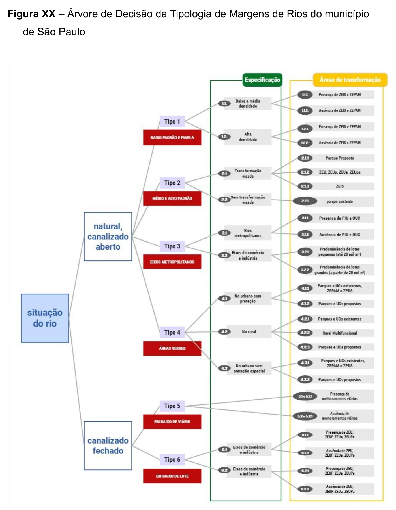
{kind=link}
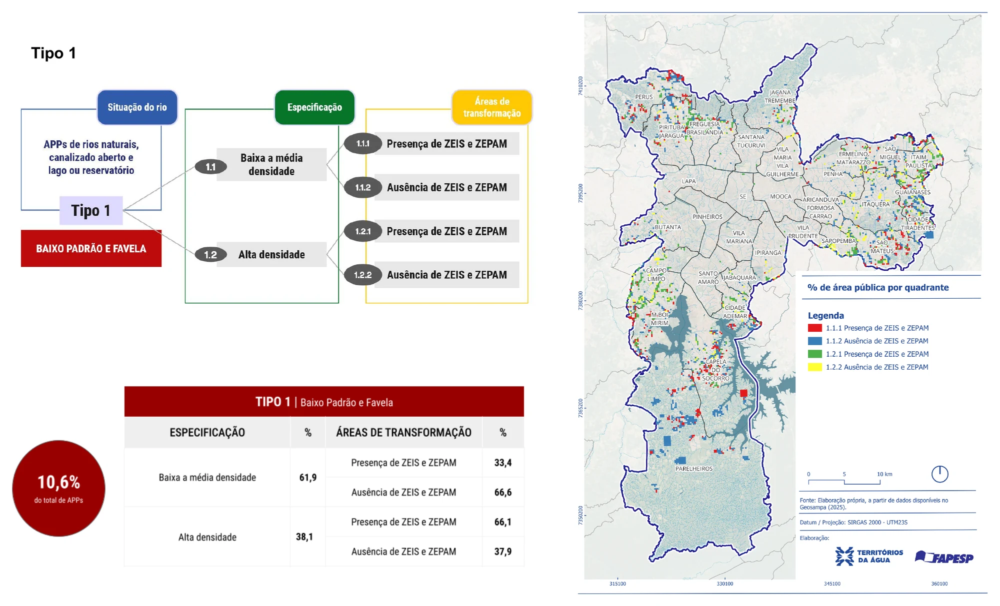
{kind=link}
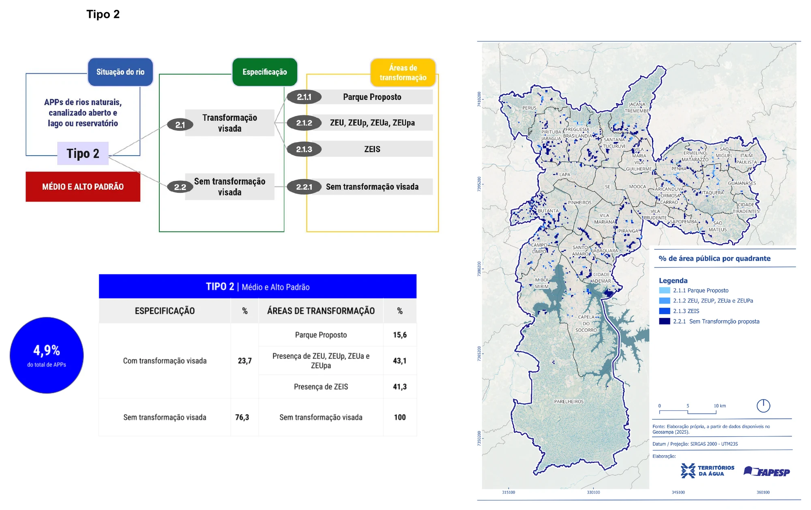
{kind=link}
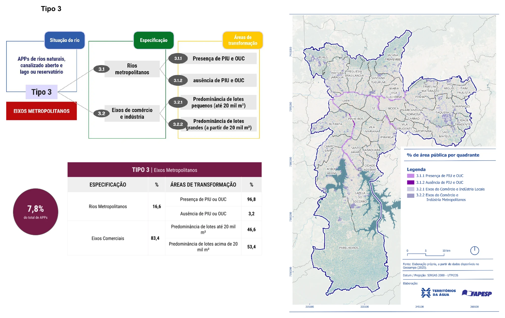
{kind=link}
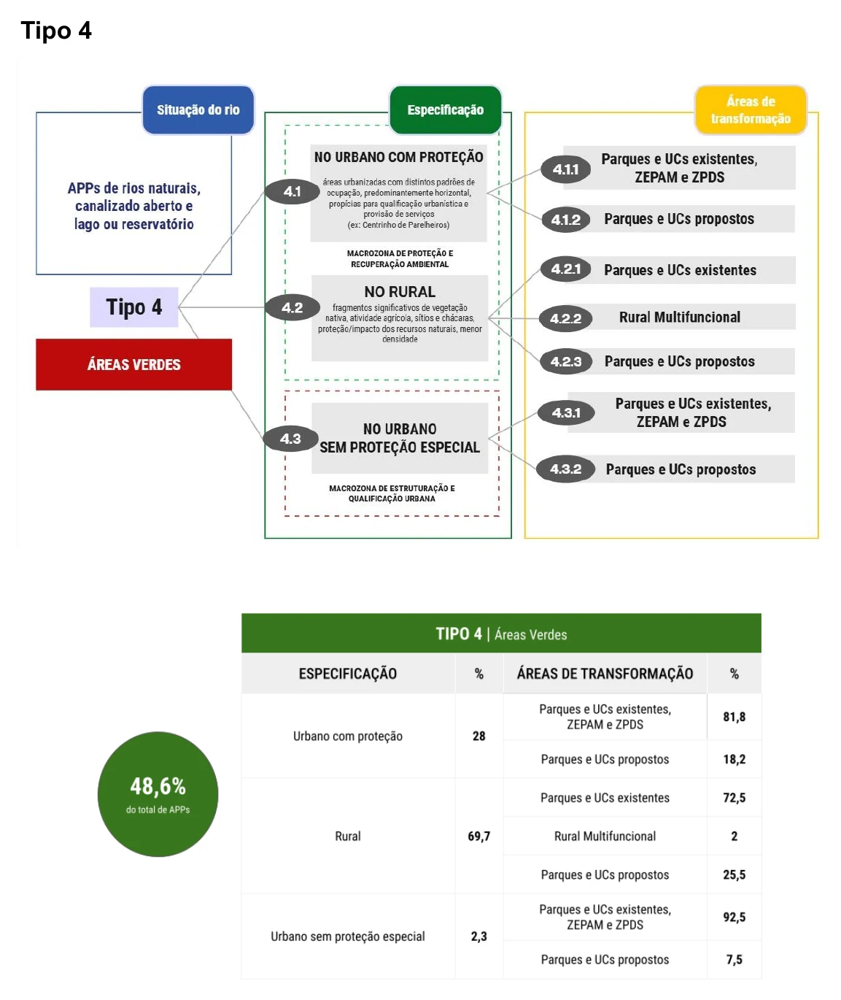
Mapas Interativos
Projetos Piloto
Projeto Piloto Parelheiros
A Bacia do Ribeirão Parelheiros está localizada no extremo sul do Município de São Paulo, nas Subprefeituras de Parelheiros e Capela do Socorro. Seu principal curso d’água dá nome à bacia, também conhecido como Ribeirão Caulim.
Essa bacia hidrográfica é caracterizada por receber água de transposição da represa Billings e contribuir para a represa Guarapiranga. Está inserida na Área de Proteção e Recuperação de Mananciais Sul, responsável pelo abastecimento de 30% da população da Região Metropolitana de São Paulo. A poluição difusa proveniente de fontes internas externas à bacia é um dos principais desafios que impactam seu principal curso d’água, bem como os demais afluentes.
Além da sua importância hídrica, a Bacia do Ribeirão Parelheiros se destaca pela rica biodiversidade, abrigando remanescentes da Mata Atlântica e várias áreas protegidas, como a Área de Proteção Ambiental Bororé-Colônia, os Parques Naturais Municipais Jaceguava, Itaim e Varginha, e o Parque Linear Ribeirão Caulim (Núcleo São Rafael).
Nas últimas décadas, a expansão de construções irregulares reflete a elevada vulnerabilidade social na região, manifestada pela ocupação de áreas de risco e ambientalmente frágeis, o que resulta em uma crescente pressão sobre Áreas de Preservação Permanente e fragmentos de vegetação nativa.
Nesse cenário, o tratamento das APPs requer uma mudança de abordagem, a partir de uma perspectiva multidisciplinar e em múltiplas escalas, que extrapole recortes normativos e articule as dimensões socioambientais e de gestão, de maneira a avançar institucionalmente na formulação de políticas públicas integradas, por meio de inovações em técnicas, procedimentos de intervenção e de novos arranjos institucionais, incluindo a gestão participativa. Nesse sentido, nasce a proposta de um Termo de Cooperação composto pela Secretaria Municipal do Verde e do Meio Ambiente (SVMA) e a Secretaria Executiva do Programa Mananciais (SEPM), com o objetivo de desenvolver análises e propostas de interesse do município de São Paulo na Bacia do Ribeirão Parelheiros. A parceria visa integrar propostas para as Áreas De Preservação Permanente dos cursos d’água, tendo em vista os condicionantes e as potencialidades existentes no território, com especial atenção às áreas de maior vulnerabilidade social e ambiental.
Enquanto produtos da cooperação, será elaborado um Plano Urbanístico e Ambiental para a Bacia do Ribeirão Parelheiros, subdividido em um diagnóstico territorial, já elaborado, e em propostas de diretrizes e intervenções, em fase de construção, a partir da definição de cenários de urbanização e do mapeamento de pressões, ameaças e oportunidades. A metodologia envolve visitas de campo, oficinas de trabalho com gestores públicos e pesquisadores, além de estudos hidráulicos e hidrológicos, com o objetivo de compreender o território da bacia para propor alternativas que sejam capazes de reduzir os impactos existentes sobre as APPs, promover justiça ambiental e garantir justiça social.
Diagnóstico Territorial da Bacia do Ribeirão Parelheiros [detalhamento]
O diagnóstico territorial mapeou os principais condicionantes e potencialidades urbanístico-ambientais da Bacia do Ribeirão Parelheiros, com foco na conservação e recuperação das Áreas de Preservação Permanente (APPs).
A bacia tem histórico de ocupação em área ambientalmente sensível, com impactos sobre seu potencial ambiental e turístico. Nos últimos 15 anos, a expansão urbana se intensificou de forma precarizada, gerando crescente demanda por infraestrutura e saneamento ambiental.
Cerca de 83% de sua hidrografia ainda se encontra em estado natural, um dado relevante do ponto de vista da conservação. Nas áreas urbanizadas, porém, os cursos d’água apresentam erosões, descarte de lixo e entulho nas margens, lançamento de esgoto sem tratamento e assoreamento expressivo.
Quatro elementos estruturam e condicionam o processo de urbanização na bacia: a ocupação radial, os cursos d’água, os parques existentes e a infraestrutura viária. Essa lógica espacial orienta tanto a análise dos vetores de expansão quanto a proposição de cenários de intervenção.
A bacia apresenta Taxa Geométrica de Crescimento Anual (TGCA), entre 2010 e 2022, de 7,7% a.a., muito acima das médias nacional (0,52%) e municipal (0,15%), evidenciando forte expansão e adensamento populacional. O crescimento de favelas em APPs chega a 4,4% a.a. A população é majoritariamente parda (44,1%) e feminina (47,1%), dados que reforçam a centralidade da justiça ambiental como eixo estruturante das políticas para a região.
As legislações urbanísticas e ambientais vigentes buscam qualificar a ocupação consolidada, conter a expansão irregular e fomentar atividades compatíveis com a conservação. O crescimento dos núcleos urbanos demandou a demarcação de Zonas Especiais de Interesse Social (ZEIS), e a implantação de parques naturais e urbanos tem sido acionada como instrumento de proteção da biodiversidade.
{kind=link}
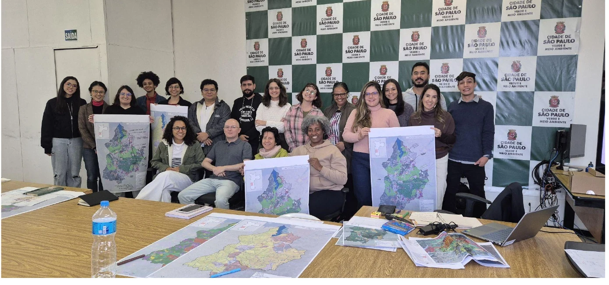
{kind=link}
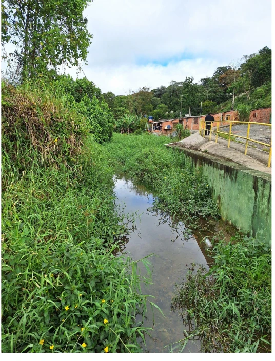
{kind=link}
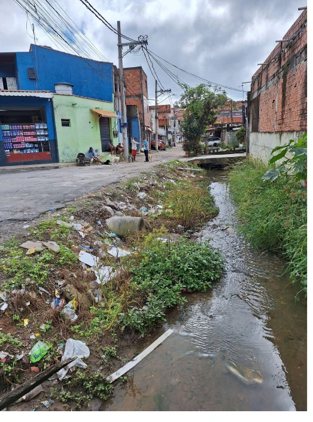
{kind=link}
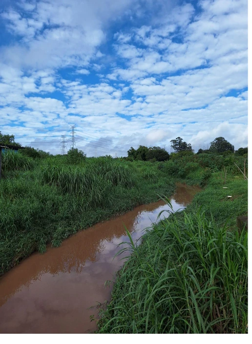
Projeto Piloto Baracela
[texto]
Eventos
[texto]
Biblioteca
A biblioteca reúne as publicações científicas produzidas no âmbito do Projeto Territórios da Água, disponíveis para consulta em Biblioteca de Publicações Científicas.
Quem Somos
[texto]